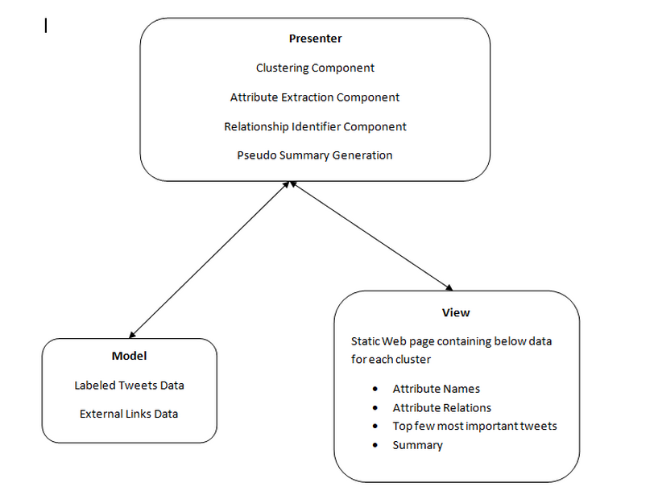

-
Introduction
Summarizing twitter tweets can be viewed as an instance of the more general problem of automated text summarization, which is the problem of automatically generating a condensed version of the most important content from one or more documents. A Twitter post or tweet is at most 140 characters long and in this study we only consider English posts.
In this project we approach the problem of summarization of tweets by first identifying the important entities from a cluster of tweets, which are assumed to be clustered already based on a topic. For each cluster we identify the most important entities from each type like Geographic location, Person etc using TF-IDF scores. Then we find most important tweets using these important entities. Finally we generate a brief sudo summary for each cluster using the important entities and important tweets.
Approach
1. Datasets
We have used labeled tweets which are taken from RepLab[1] data set as the source data for generating summaries. RepLab is a competitive evaluation exercise for Online Reputation Management systems. In the dataset provided we have the set of tweets with the tweet id, author, entity id , text. We are also provided with a labeled dataset which has the fields of tweet id, author, entity id, filtering, polarity, topic, topic priority.
2. MVP Model
3. Base Clusters Generation
Using labeled data we have generated Base tweet clusters, for further processing, using the tweet topic name.
4. Named Entity Recognition
We have used Aritter[2] NLP tool for identifying named entities, attributes and attribute relations. For each cluster of tweets, we ran Aritter NER tool to classify tweet entities and extracted all entities apart from type “O”, as identified by Aritter tool, as important keywords and generated TF-IDF counts for them. Also, while generating summaries we have taken location (“geo-loc” named entity as per Aritter classification) as the most priority type among all named entities.
5. Generate summary per cluster
Generate a map of named entity type vs named entities for the list of all tweets and call this map as NETYPE_MAP which looks like as given below.
“geo-loc” => < ne >, < ne >...
“person” => < ne >,< ne > ...
....
Tweet summary can be of three types. Collect the named entities of max TF-IDF count.
Case I: When the named entities with max TF-IDF’s all are of location type Print the summary as the collection of tweet texts which contains the named entities with max TF-IDF counts of location type.
Case II: When no location type named entities has maximum TF-IDF and only first the max TF-IDF named entity type is” important”.A named entity type is marked as “important” only if its TF-IDF count is not less than half of the max TF-IDF count i.e. a named entity type with TF-IDF count as max2 is marked as important named entity type only if
2 * max2 ≥ max
where max is the max TF-IDF count for an NE type in the cluster
Case III: When the max TF-IDF named entity types are of location and other types (Mixed case).This becomes a sub-case of case 2Experiments and Results
We have generated pseudo summaries for tweet clusters and will analyze the summaries with that of text rank tool.
References
1. RepLab Data set http://nlp.uned.es/replab2013
2. Twitter NLP tools (Aritter).
3. Triplet Extraction From Sentences. Delia Rusu*, Lorand Dali*, Blaž Fortuna°, Marko Grobelnik°, Dunja Mladeni
4. R. Mihalcea. Language independent extractive summarization.(TextRank) In Proceedings of the ACL 2005 on Interactive poster and demonstration sessions, pages 49–52.
5. Micro opinion Generation: An unsupervised approach to generating ultra concise summaries of opinions. (http://sifaka.cs.uiuc.edu/czhai/pub/www12-micropinion.pdf)
6. Comparing Twitter Summarization Algorithms for Multiple Post Summaries (http://cs.uccs.edu/~jkalita/papers/2011/InouyeDavidSocialComm2011.pdf)
7. Chakrabarti, D. , Punera, K, Event Summarization using Tweets , In Proc .ICWSM 2011. (http://www.aaai.org/ocs/index.php/ICWSM/ICWSM11/paper/viewFile/2885/3263)
8. Summarizing Sporting Events Using Twitter. (http://www.jeffreynichols.com/papers/summary-iui2012.pdf )
Sub-Topic Clustering on Tweets and generating brief pseudo summaries per cluster related to particular Entity
References
- Aritter Parser
Git hub repo for Twitter aritter parser - Tarsqi Toolkit
Time expression extractor tool kit - Stanford Named Entity Tagger
Online tool for Stanford NER Tagger - Text Rank
Text Rank implementation in java